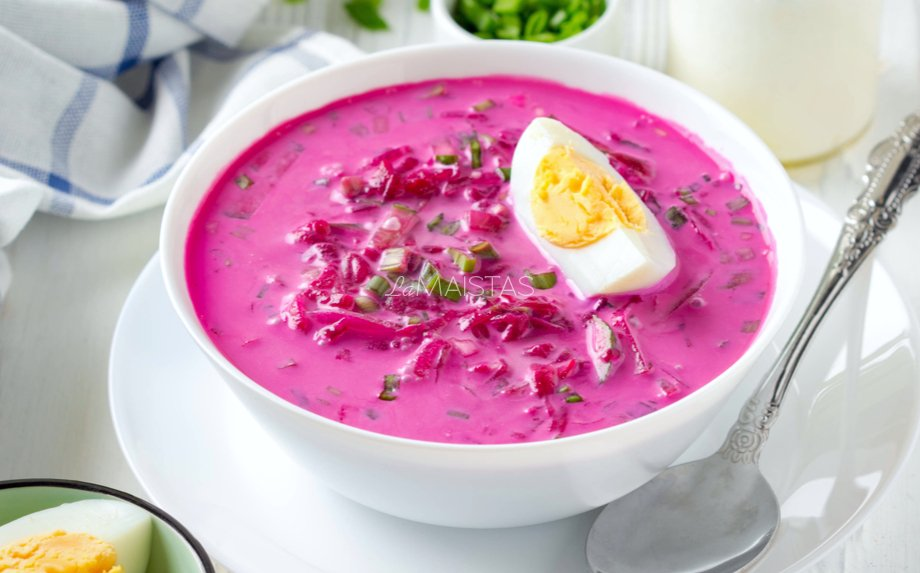

Pagrindinis

Lietuviški šaltibarščiai – labai skani, gaivinanti ir populiari sriuba visoje Lietuvoje.
Reikalingi produktai:
- Kefyras
- Grietine
- Agurkai
- Kiausiniai
- Svogunu laiskai
- Krapai
- Druska
- Petrazoles
Gamybos eiga:
- Burokėlius sutrinkite ant rupios trintuvės. Agurkus supjaustykite ketvirčiais. Kiaušinius išvirkite ir supjaustykite vidutinio dydžio kubeliais. Svogūnus, petražoles ir krapus smulkiai supjaustykite.
- Viską suberkite į didelį dubenį, išmaišykite ir supilkite kefyrą. Tada sukrėskite grietinę ir vėl viską gerai išmaišykite.
- Jei mėgstate skystesnius šaltibarščius, praskieskite virintu vandeniu (200ml) arba rūgpieniu. Pasūdykite pagal skonį, gerai išmaišykite ir padėkite į šaldytuvą, kad atvėstų. Tuo tarpu išvirkite bulves. Tikri lietuviški šaltibarščiai valgomi su bulvėmis!